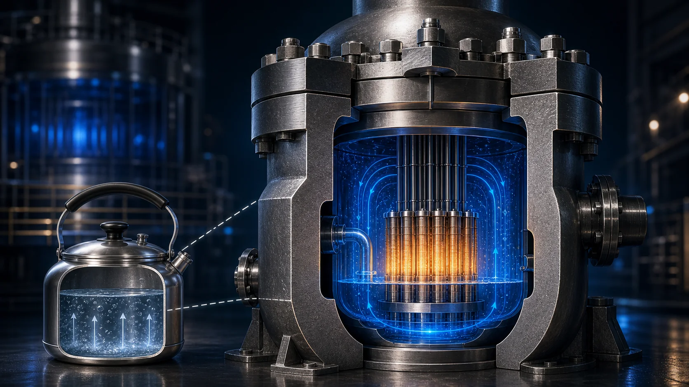
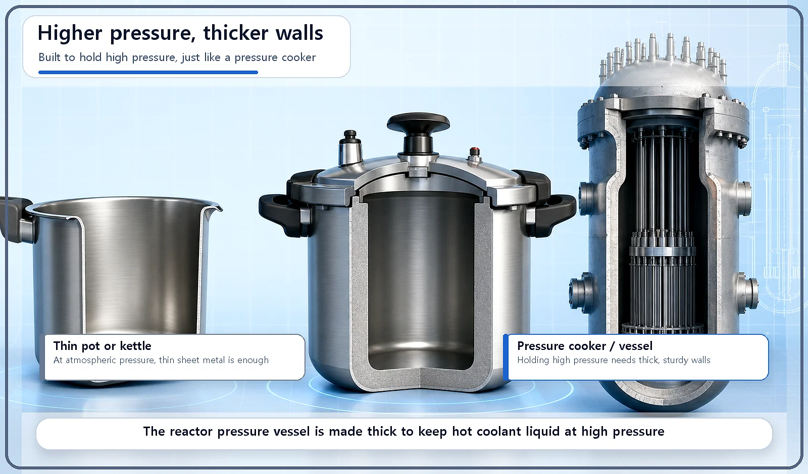
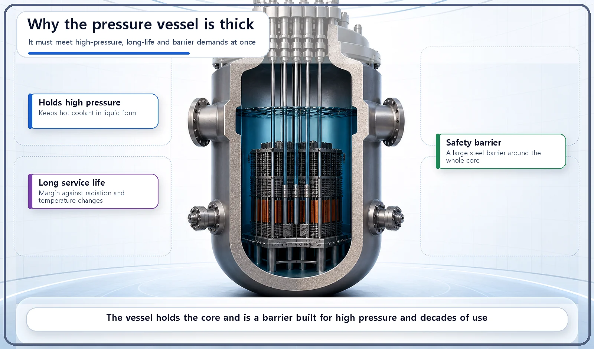

Reactor Components · 060
Built Like a Pressure Cooker — Why the Reactor Pressure Vessel Is So Thick
A pressure cooker needs thicker walls than a pot, and a reactor pressure vessel needs far thicker walls than a kettle, for the same basic reason.

The reactor pressure vessel is a thick steel container that holds the entire core. It is made thick because it must withstand high internal pressure, decades of radiation exposure and sudden temperature changes, and because it is one of the barriers that keep radioactive material contained.
Ever looked closely at a pressure cooker?
An ordinary pot does a fine job with a single thin sheet of metal. A pressure cooker is a different animal. To raise the pressure inside and cook food faster and more thoroughly, it comes with a far thicker, sturdier lid and body, plus a locking mechanism that clamps the lid down tight. The reason is simple: the higher the pressure, the greater the force the container has to withstand.
People sometimes ask whether a reactor is just a giant kettle. The pressure cooker is the key to answering that question.
The reactor pressure vessel: the container that holds the core
The reactor pressure vessel is a thick metal container that holds every part of the core: the fuel assemblies, the moderator and coolant, the control rods and more.
In a pressurized water reactor, the coolant inside this vessel is kept at very high pressure. That keeps the water liquid even at temperatures far above its normal boiling point.
Why does it have to be so thick?
First, it has to withstand high internal pressure. To keep the coolant at high pressure, the vessel wall must be thick enough to bear the force that pressure exerts. The higher the pressure, the greater the force on the wall, so wall thickness is a key design factor for holding that pressure safely, exactly why a pressure cooker has thick walls.
Second, it is exposed to radiation for a very long time. After decades of exposure to the neutrons and gamma rays coming from the core, the metal can gradually change. A thick wall also provides margin to cope with these long-term changes.
Third, it has to survive sudden temperature changes. Whether temperatures shift during normal operation or change abruptly in an emergency, the vessel must hold up without cracking, so both its thickness and its material are designed with this in mind.
Fourth, it acts as a barrier that keeps radioactive material in. If the fuel cladding is the barrier on the inside of each fuel rod, the pressure vessel is a much larger safety barrier wrapped around the entire core.

The decisive difference from a kettle
An ordinary kettle boils water at about atmospheric pressure, so a thin metal sheet is enough. A reactor pressure vessel, however, must safely withstand much higher pressures and temperatures over a long period. So it is made of thick special steel and goes through precise inspection and maintenance.
That difference in thickness is one concrete answer to the "giant kettle" question. The goal is the same, heating water to make steam, but the structure needed to reach that goal safely is in a different league altogether.
| Requirement | Why it calls for a thick wall |
|---|---|
| High internal pressure | Higher pressure means more force on the wall; thickness lets it hold the pressure safely |
| Long-term radiation exposure | Decades of neutrons and gamma rays can gradually change the metal; thickness provides margin |
| Sudden temperature changes | The vessel must not crack in operational or emergency temperature swings |
| Safety barrier | It encloses the whole core and helps keep radioactive material contained |

Two common mix-ups
"The thick vessel is just extra insurance; it doesn't really need to be that thick." No. The thickness is an essential design element that has to satisfy several requirements at once: pressure design to withstand high pressure, coping with long-term radiation exposure, and coping with sudden temperature changes.
"As long as the pressure vessel is strong, safety is taken care of." No. Safety depends on several layers of barriers working together: the fuel cladding, the pressure vessel, and others such as the containment building.
Key takeaways
The reactor pressure vessel holds every part of the core. It is made thick because it must withstand high internal pressure, long-term radiation exposure and sudden temperature changes, much as a pressure cooker is far thicker than an ordinary pot. It is also one of several barriers that keep radioactive material contained, working together with the fuel cladding and the containment building.